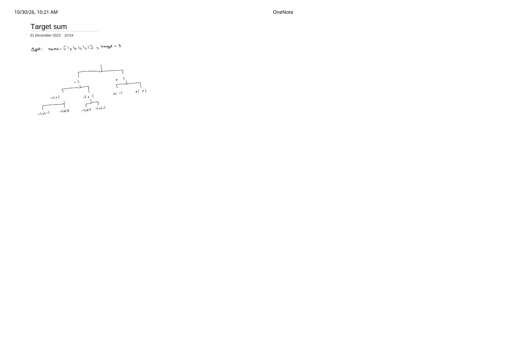

Target Sum (LeetCode 494): From the Binary +/- Sign Tree to 0/1 Subset-Sum DP
Expanded from handwritten competitive coding study note: 09_Target_sum.pdf
In Subsets and Combination Sum II, we used a forward for (j = i..n-1) loop because elements could be omitted altogether. In Target Sum, every single element in nums must participate with either a + or a - sign in front of it! 09_Target_sum.pdf draws the resulting binary sign tree on [1, 1, 1, 1, 1], which sets up a classic three-step progression from $O(2^n)$ recursion to $O(n \cdot P)$ 1D Subset-Sum DP.
Problem Statement
LeetCode 494 · Target Sum
You are given an integer array nums ($1 \le n \le 20$, $0 \le \text{nums}[i] \le 1000$) and an integer target. Build expressions out of nums by adding one of the symbols '+' or '-' before each integer in nums and concatenating them. Return the number of different expressions that evaluate to target.
Example from note: nums = [1, 1, 1, 1, 1], target = 3 → Output: 5:
-1+1+1+1+1, +1-1+1+1+1, +1+1-1+1+1, +1+1+1-1+1, +1+1+1+1-1 ($\binom{5}{1} = 5$ ways to pick which single 1 gets -).
Intuition: The Mandatory Binary +/- Tree (09_Target_sum.pdf)
At each index $i \in \{0, 1, \dots, n - 1\}$, we face an exact two-way choice—subtract nums[i] or add nums[i]—and advance to $i + 1$. Only depth-$n$ leaves represent complete expressions:
09_Target_sum.pdf. While the full tree has $2^n$ leaves ($2^{20} \approx 10^6$), overlapping (i, curSum) states appear as early as depth 2.Brute → Better → Optimal Progression
- Brute Force ($O(2^n)$ Binary Backtracking): Directly evaluate
dfs(i + 1, sum - nums[i]) + dfs(i + 1, sum + nums[i]). With $n \le 20$, $2^{20} = 1{,}048{,}576$ calls marginally passes in C++, but fails immediately if $n = 40$. - Better ($O(n \cdot S_{\text{total}})$ 2D Offset Memoization): Since running sums lie in $[-S_{\text{total}}, +S_{\text{total}}]$ where $S_{\text{total}} = \sum \text{nums}[i] \le 1000$, shift
curSumby $+S_{\text{total}}$ and cachememo[i][curSum + offset]. - Optimal ($O(n \cdot P)$ Time, $O(P)$ Space — Algebraic 0/1 Subset-Sum Reduction): Partition all elements into those assigned
+(subset $P$) and those assigned-(subset $N$):$$\begin{cases} \sum P - \sum N = \text{target} \\ \sum P + \sum N = S_{\text{total}} \end{cases} \implies 2\sum P = S_{\text{total}} + \text{target} \implies \sum P = \frac{S_{\text{total}} + \text{target}}{2}.$$Instead of tracking negative and positive sums across $[-S_{\text{total}}, +S_{\text{total}}]$, simply count how many subsets ofnumssum to $P = (S_{\text{total}} + \text{target}) / 2$!
Clean C++ Implementations (All 3 Stages)
#include <cmath>
#include <numeric>
#include <vector>
using namespace std;
class Solution {
public:
// Stage 1: Direct O(2^n) binary sign tree matching 09_Target_sum.pdf
int backtrackWays(int i, int curSum, const vector<int>& nums, int target) {
if (i == (int)nums.size()) return curSum == target ? 1 : 0;
return backtrackWays(i + 1, curSum - nums[i], nums, target)
+ backtrackWays(i + 1, curSum + nums[i], nums, target);
}
// Stage 2: Top-down memoization with +total offset — O(n * total)
int findTargetSumWaysMemo(vector<int>& nums, int target) {
int n = (int)nums.size();
int total = accumulate(nums.begin(), nums.end(), 0);
if (abs(target) > total) return 0;
vector<vector<int>> memo(n, vector<int>(2 * total + 1, -1));
auto dfs = [&](auto& self, int i, int sum) -> int {
if (i == n) return sum == target ? 1 : 0;
int& res = memo[i][sum + total];
if (res != -1) return res;
return res = self(self, i + 1, sum - nums[i])
+ self(self, i + 1, sum + nums[i]);
};
return dfs(dfs, 0, 0);
}
// Stage 3: Optimal 1D 0/1 Subset-Sum DP — O(n * P) time, O(P) space
int findTargetSumWays(vector<int>& nums, int target) {
int total = accumulate(nums.begin(), nums.end(), 0);
if (abs(target) > total || (total + target) % 2 != 0) return 0;
int posTarget = (total + target) / 2;
vector<int> dp(posTarget + 1, 0);
dp[0] = 1;
for (int x : nums) {
// Iterate s DOWNWARD to 0 (inclusive of x == 0!) so each index is used at most once
for (int s = posTarget; s >= x; --s) {
dp[s] += dp[s - x];
}
}
return dp[posTarget];
}
};Complexity & Critical Edge Cases
- Time Complexity: $O(2^n)$ pure backtracking → $O(n \cdot P)$ optimal DP where $P = (S_{\text{total}} + \text{target}) / 2 \le S_{\text{total}}$.
- Space Complexity: $O(P)$ for the 1D
dpvector ($O(n)$ stack in pure backtracking).
Two Subtle Edge Cases That Break 50% of Submissions
- Zeros in
nums(e.g.,nums = [0, 0, 0, 1], target = 1→8, NOT1!): Because $+0$ and $-0$ are distinct sign assignments, every0doubles the number of ways! Notice why our inner loopfor (int s = posTarget; s >= x; --s)handlesx = 0automatically: whenx = 0,dp[s] += dp[s - 0]doubles everydp[s](includingdp[0]: $1 \to 2 \to 4 \to 8$)! Initializing the whole first columndp[i][0] = 1in 2D DP is a famous bug because it overwrites that doubling! - Negative
targetwith large magnitude (e.g.,nums = [100], target = -200): Checking onlytarget > totalwithoutabs(target) > totalmakesposTarget = (100 - 200) / 2 = -50negative and crashesvector<int> dp(posTarget + 1)! Always checkabs(target) > total.
From the Handwritten Notes
View original handwritten page — 09_Target_sum.pdf (Page 1)


09_Target_sum.pdf, page 1: binary -1 / +1 recursion tree on nums = [1, 1, 1, 1, 1], target = 3 expanding every element with both signs.